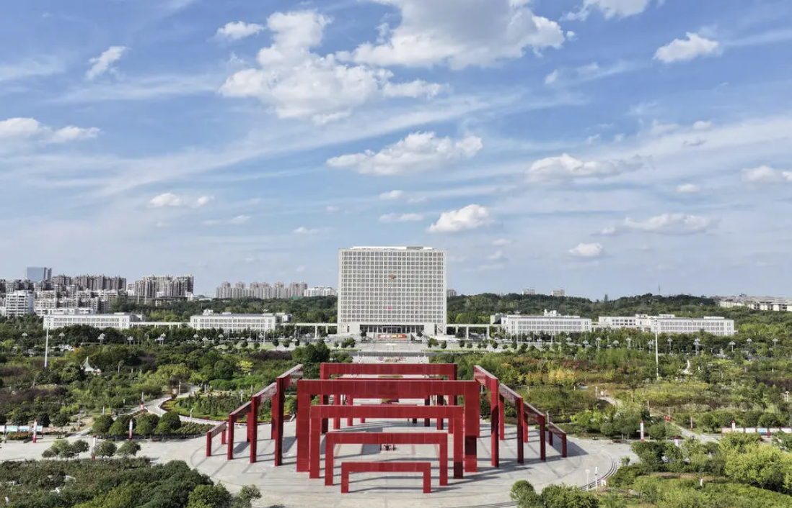

印象信阳

信阳，古称义阳、申州，位于河南省最南部，地处淮河上游、大别山北麓，东邻安徽、南接湖北，素有“北国江南、江南北国”之美誉。
这里山清水秀、气候温润，是中国毛尖之都——信阳毛尖闻名全国、香飘百年。同时，信阳也是鄂豫皖革命老区的核心区域，红色文化底蕴深厚。
信阳饮食兼具南北特色，以炖菜、热干面、南湾鱼等为代表，形成了独特的“豫风楚韵”饮食文化。
18,908总面积（平方公里）
2 区 8 县行政区划
约 620 万常住人口
2800+年建城史
历史人文
- 西周 —— 周宣王封申伯于申，建申国，信阳别称“申城”由此而来。
- 春秋战国 —— 楚灭申置县，此地成为楚文化北渐的前沿，中原文化与荆楚文化在此交汇融合。
- 北宋 —— 为避宋太宗赵光义名讳，改“义阳”为“信阳”，此名沿用至今。
- 土地革命时期 —— 鄂豫皖革命根据地在此发展壮大，新县曾是苏区首府，红四方面军、红二十五军均在此诞生。
- 1934 年 —— 红二十五军由光山何家冲出发，踏上长征之路。
- 1998 年 —— 撤销信阳地区，设立地级信阳市。
核心景点
| 景点名称 | 所在位置 | 景点特色 |
|---|---|---|
| 鸡公山 | 浉河区 | 中国四大避暑胜地之一，万国建筑博览，云海佛光奇观 |
| 南湾湖 | 市区西南约 5 公里 | 中原第一湖，61 座岛屿星罗棋布，盛产南湾鱼 |
| 灵山寺 | 罗山县灵山风景区 | 千年古刹，唐明皇御封“国庙”，僧尼同寺的独特文化 |
| 郝堂村 | 平桥区五里店街道 | 中国最美休闲乡村，豫南民居典范，夏日荷塘如画 |
| 鄂豫皖苏区首府革命博物馆 | 新县 | 全国爱国主义教育示范基地，红色记忆的集中呈现 |
| 黄柏山国家森林公园 | 商城县 | 森林覆盖率超九成，天然氧吧，飞瀑幽谷 |
| 西河古村落 | 商城县 | 明清古民居群，百年古树参天，山水相映 |
| 汤泉池 | 商城县 | 大别山温泉，水温常年约 60℃，疗养度假佳处 |
特色美食
-
信阳毛尖
中国十大名茶之一，汤色清澈，香气持久，入口鲜爽回甘。
-
南湾鱼
产自南湾湖，肉质细嫩，炖汤鲜美无比，鱼头汤尤为一绝。
-
信阳热干面
融合湖北风味，佐以豆芽、千张，芝麻酱香浓，口感丰富。
-
固始鹅块
信阳经典名菜，肉质紧实，汤汁浓郁，越煮越香。
-
罗山大肠汤
香辣入味，肥而不腻，是本地人早餐桌上的经典。
-
石凉粉
信阳特色夏季小吃，清凉解暑，口感 Q 弹爽滑。
-
潢川空心贡面
细如发丝、中空透气，久煮不烂，曾是宫廷贡品。
-
新县将军菜
大别山野菜，带着红色记忆的乡土味道，清爽解腻。
茶香毛尖
信阳毛尖又称“豫毛峰”，是中国十大名茶之一，以“细、圆、光、直、多白毫，香高、味浓、汤色绿”著称于世。
其核心产区集中在信阳西部山区，以“五云两潭一寨”最为有名——车云山、集云山、云雾山、天云山、连云山，黑龙潭、白龙潭，以及何家寨。
清明前后，采茶人只取一芽一叶初展，经摊放、生锅、熟锅、烘焙等多道工序精制而成。一杯好毛尖，汤色嫩绿明亮，入口鲜爽，回味悠长。
- 1915 年巴拿马万国博览会金奖
- 五云两潭一寨核心产区
- 一芽一叶明前采摘标准
出行贴士
🌿 最佳时节
4—5 月采茶季，茶山青翠；7—8 月上鸡公山避暑；10 月大别山秋色斑斓。
🚄 交通方式
京广高铁信阳东站直达郑州、武汉、北京；京港澳、沪陕高速在此交汇；明港机场可通航多地。
🎁 伴手好礼
信阳毛尖、板栗、潢川空心贡面、光山十宝、固始笨鸡蛋，都是不错的家乡味道。
🗓 行程建议
Day1 市区南湾湖 + 信阳博物馆；Day2 鸡公山；Day3 新县红色线路或商城黄柏山。